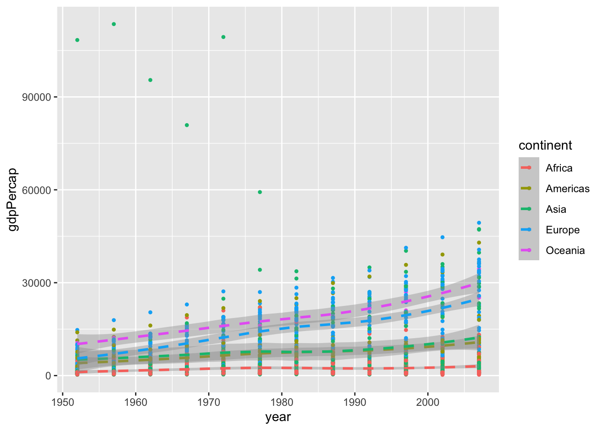

Kapitel 13 scales
Scales steuern die Zuordnung von Daten zu aesthetics. Sie nehmen deine Daten und bestimmen damit Größe, Farbe, Position oder Form von Objekten. Sie erlauben dir auch die Achsen und die Legend nach deinen Vorstellungen anzupassen. Du kannst sicher mit ggplot2 Grafiken erstellen, ohne zu wissen, wie scales funktionieren, aber wenn du scales verstehst und lernst, wie du sie einstellen kannst, wirst du viel mehr Kontrolle über deine Grafiken bekommen.
Neben weiteren Möglichkeiten können wir über scales also
-
colorundfill positionsizeshapeline type
durch Verwendung der scale_"aesthetic"_"type" Funktionen modifizieren. Argumente dieser Funktionen sind z.B. name, limits, breaks oder labels.
Zuerst spielen wir etwas mit Farben. Dazu plotten wir erneut year gegen gdpPercap und wählen für jeden Kontinent eine eigene Farbe. Da wir die Farben über colour definieren, verwenden wir danach die Funktionen scale_colour_xxx() (im Vergleich zu z.B. scale_fill_brewer()).
(p <- gapminder %>%
ggplot(aes(x = year, y = gdpPercap, colour = continent)) +
geom_point(size = 0.9) +
geom_smooth(linetype = 2) )
#> `geom_smooth()` using method = 'loess' and formula 'y ~ x'
p + scale_colour_brewer(palette = "Set1") # Farbpaletten von http://colorbrewer2.org/
#> `geom_smooth()` using method = 'loess' and formula 'y ~ x'
p + scale_colour_grey(start = 0.1, end = 0.9) # keine so gute Wahl
#> `geom_smooth()` using method = 'loess' and formula 'y ~ x'
p + scale_colour_manual(values = c("blue", "gold", "sienna1", "sienna4", "hotpink1", "hotpink4"), name = "Kontinent")
#> `geom_smooth()` using method = 'loess' and formula 'y ~ x'
In diesem Beispiel haben wir also die Farbe über eine vorgegebene Palette, in Grau-Stufen bzw. manuell gewählt. Im letzten Beispiel haben wir zusätzlich noch den Titel der Legende geändert über das name Argument.
Die Achsenbeschriftung der y-Achse ist nicht wirklich schön, weil nicht unbedingt selbsterklärend. Daher ändern wir im nächsten Schritt die Achsenbeschriftung.
p <- p + scale_colour_manual(values = c("blue", "gold", "sienna1", "sienna4", "hotpink1", "hotpink4"))
p + scale_y_continuous("GDP pro Kopf")
#> `geom_smooth()` using method = 'loess' and formula 'y ~ x'Da es sich bei gdpPercap um eine stetige Variable handelt, haben wir scale_y_continuous() verwendet (im Gegensatz zu scale_y_discrete()) um die Achsenbeschriftung zu ändern. Über die Hilfsfunktion labs() können wir die Beschriftung der Grafik aber auch einfacher/intuitiver ändern.
(p <- p + labs(x = "Jahr", y = "GDP pro Kopf",
title = "Monoton steigendes GPD pro Kopf",
subtitle = "Gestrichelte Linie zeigt Durchschnittswerte über alle Länder pro Kontinent"))
#> `geom_smooth()` using method = 'loess' and formula 'y ~ x'Die frühen Kuwait-Beobachtungen ziehen die y-Achse stark auseinander. Daher könnte man etwas in den Plot hinein zoomen wollen. Dazu kann man das Koordinatensystem anpassen übercoord_cartasian(). Alternativ könnte man auch mit der Funktion ylim() arbeiten (analog existiert natürlich auch xlmin()). Verwendet man xlim() bzw. ylim(), so werden alle Datenpunkte, die nicht im zu plottenden Bereich liegen, aber nicht nur nicht gezeichnet, sondern auch aus dem Datensatz (für diesen einen Plot) entfernt. Dies hat Auswirkungen auf Teile des Plots, die auf statistische Transformationen basieren, die mithilfe der vorhanden Daten berechnet wurden.
p + ylim(0,55000)
#> `geom_smooth()` using method = 'loess' and formula 'y ~ x'
#> Warning: Removed 6 rows containing non-finite values
#> (stat_smooth).
#> Warning: Removed 6 rows containing missing values
#> (geom_point).
(p <- p + coord_cartesian(ylim = c(0, 55000)))
#> `geom_smooth()` using method = 'loess' and formula 'y ~ x'In der rechten Grafik ist der Verlauf der Kurven unverändert. In der linken Grafik hingegen liegt die Kurve für Asien nun deutlich unter der Kurve für Amerika bis Mitte der 80er Jahre.
Andere mögliche Positionsänderungen ergeben sich durch Skalierungen der Achsen wie scale_x_log10(), scale_y_sqrt() oder
p + scale_x_reverse()
#> `geom_smooth()` using method = 'loess' and formula 'y ~ x'Für weitere Optionen sei hier auf die online Version der neuesten Auflage von ggplot2 (Wickham 2009) verwiesen.